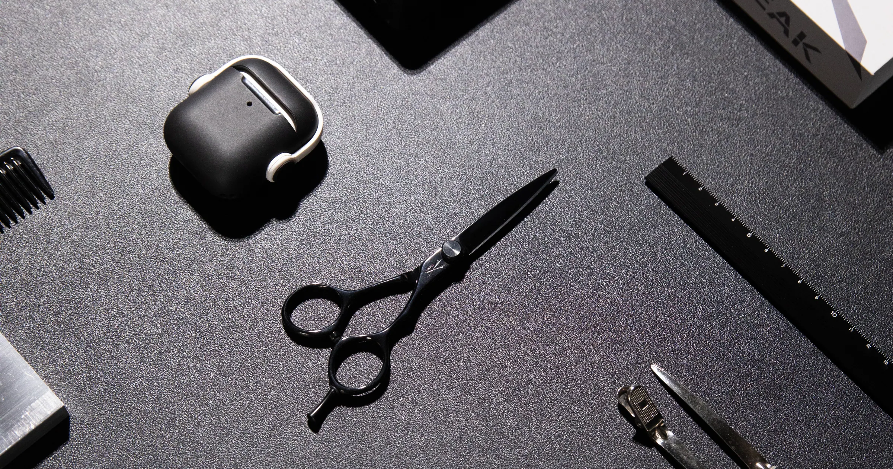
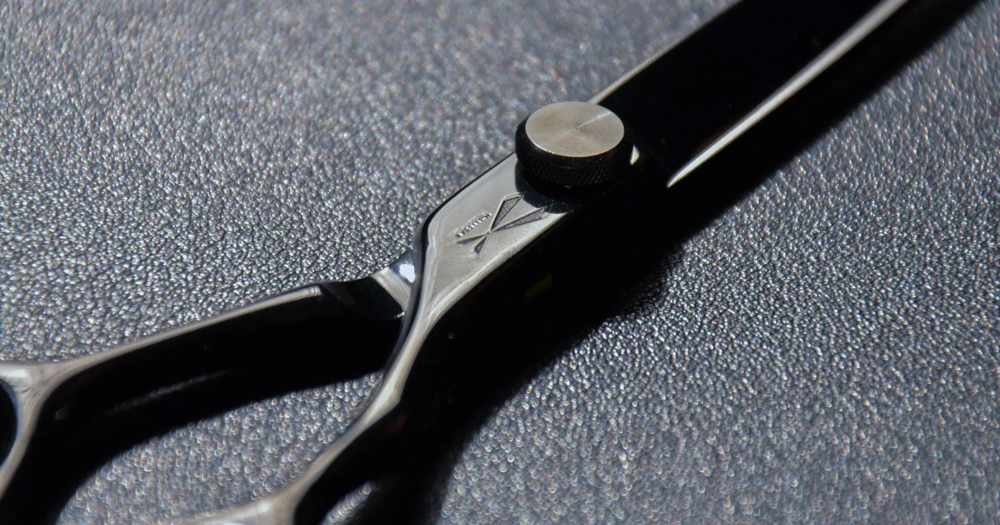
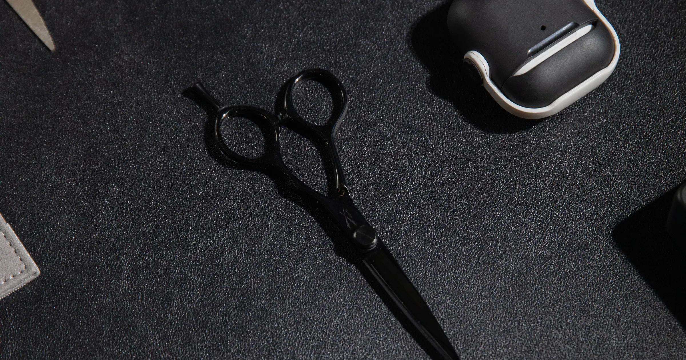
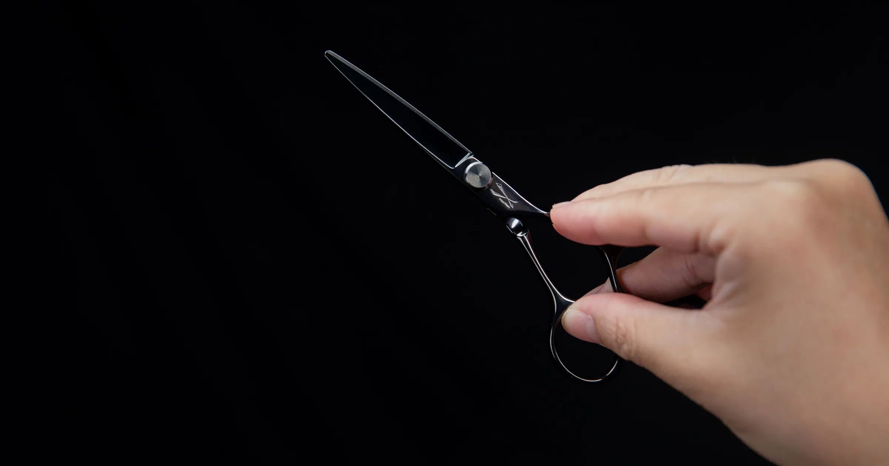
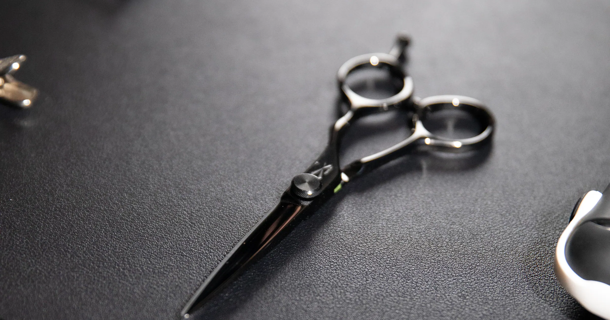
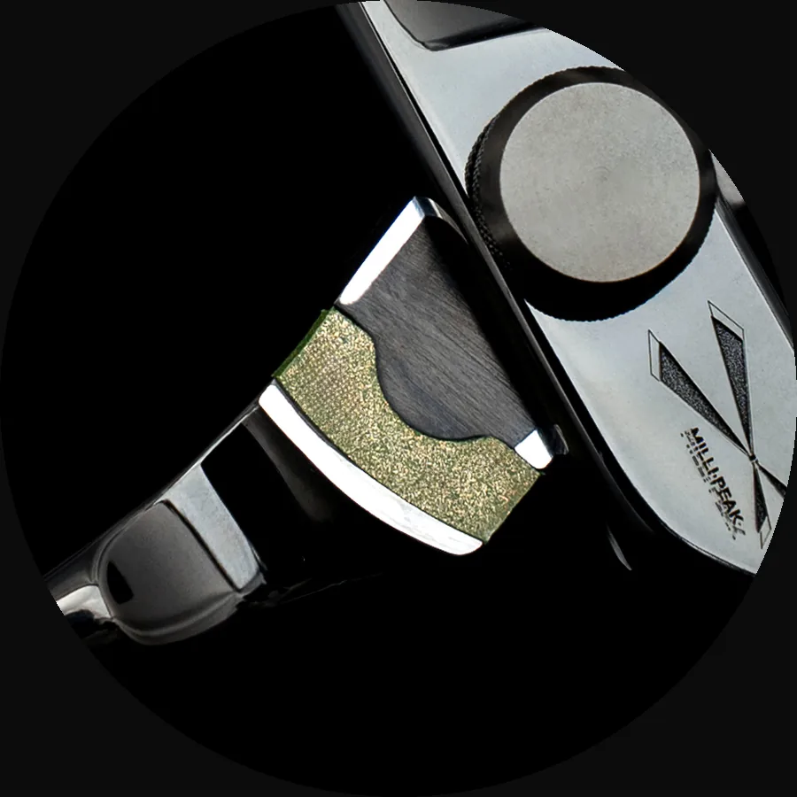
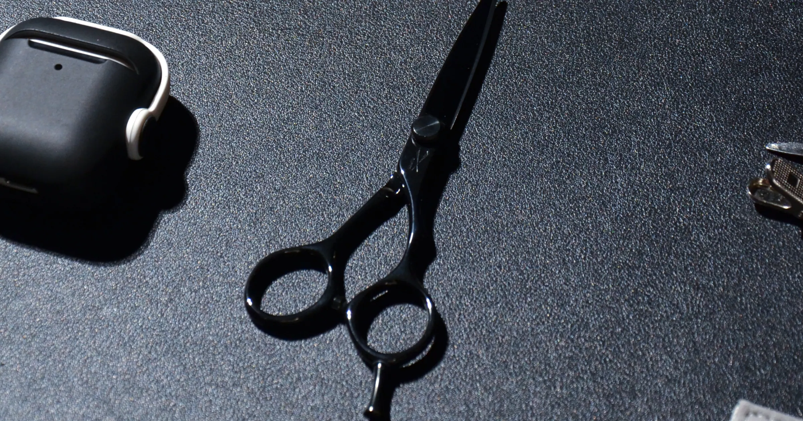
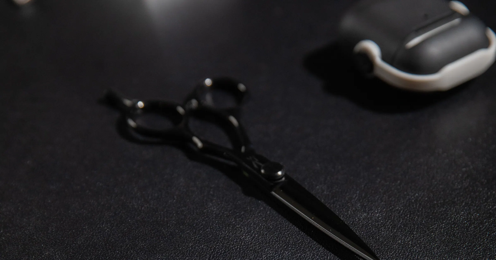
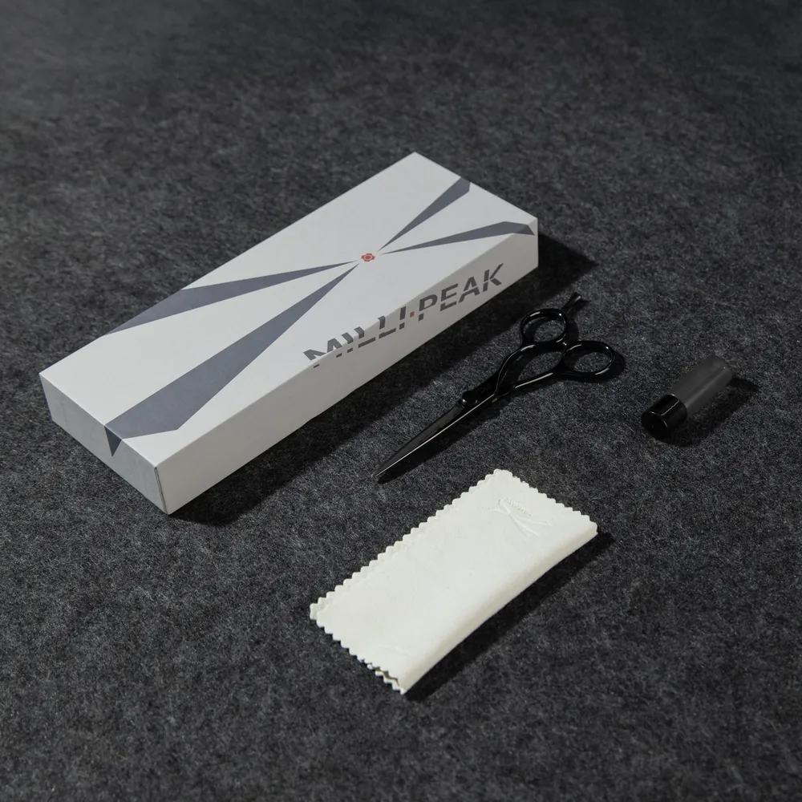

離手最近，所以精準度最高。不浮誇，卻能掌控每一個細節，尤其修短髮外線時，更能感受工具和手之間的連動。
Closest to the hand, so the most precise. Never showy, yet in control of every detail, especially when refining short-hair outlines, where tool and hand move as one.

5.25 吋短刀身，精準度最高。
Short 5.25" blade for the highest precision.

頭段半圓弧設計，貼著皮膚剪也安心。
Half-rounded tip, safe to work close to the skin.

內附耐磨片，張力穩定、越用越順。
Wear plate inside for steady tension.

平口螺絲，低調。
Flush screw, understated.

耐磨片 wear plate
內附耐磨片，張力穩定、越用越順。
Wear plate inside for steady tension.

耐磨片 wear plate
每一把都有耐磨片，看不見，但一直在保護你的刀。
Every pair has a wear plate. Unseen, but always protecting the blade.

MP–100S specifications
型號 model
MP–100S
長度 length
5.25 吋
顏色 color
黑色
用途名 use
精準結構刀
價格 price
NT$4,500
鋼材使用日本 440C 鋼材 Steel: Japanese 440C.

緻 fine.
MP–100S
精準剪裁
- 單支 singleNT$4,500
- 三刀核心組 通・透・順NT$12,600
- 四刀完整組 緻・通・透・順NT$16,800
價格為新台幣，含稅。
課程 course：《科學剪髮・基礎剪髮教學》 NT$6,000